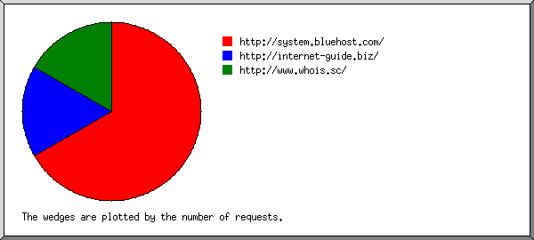
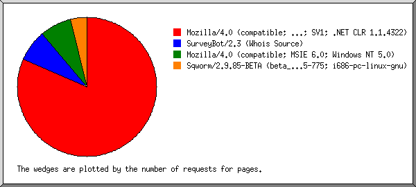
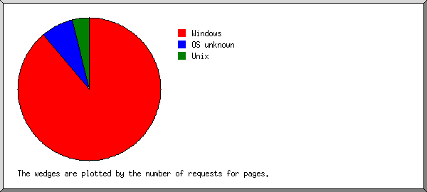
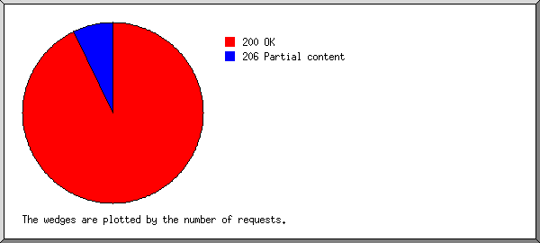
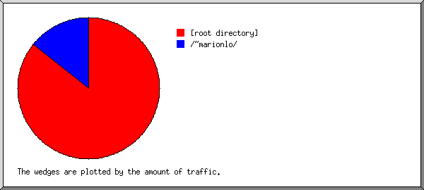
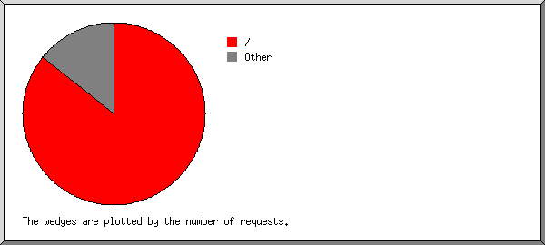

Web Server Statistics for marionlouisiana.org Web Server Statistics for marionlouisiana.org
Web Server Statistics for marionlouisiana.org Web Server Statistics for marionlouisiana.org(Go To: Top: General Summary: Monthly Report: Daily Summary: Hourly Summary: Domain Report: Organization Report: Referring Site Report: Browser Report: Browser Summary: Operating System Report: Status Code Report: File Size Report: File Type Report: Directory Report: Request Report)
(Figures in parentheses refer to the 7-day period ending Jun 02
2005 at 1:33 PM).
Successful requests: 28 (20)
Average successful requests per day: 3 (2)
Successful requests for pages: 28 (20)
Average successful requests for pages per day: 3 (2)
Distinct files requested: 6 (2)
Distinct hosts served: 7 (2)
Data transferred: 32.046 kilobytes (22.890 kilobytes)
Average data transferred per day: 4.559 kilobytes (3.270 kilobytes)
(Go To: Top: General Summary: Monthly Report: Daily Summary: Hourly Summary: Domain Report: Organization Report: Referring Site Report: Browser Report: Browser Summary: Operating System Report: Status Code Report: File Size Report: File Type Report: Directory Report: Request Report)
Each unit ( ) represents 1 request
for a page.
) represents 1 request
for a page.
month: #reqs: #pages: --------: -----: ------: May 2005: 22: 22:Busiest month: May 2005 (22 requests for pages).Jun 2005: 6: 6:
(Go To: Top: General Summary: Monthly Report: Daily Summary: Hourly Summary: Domain Report: Organization Report: Referring Site Report: Browser Report: Browser Summary: Operating System Report: Status Code Report: File Size Report: File Type Report: Directory Report: Request Report)
Each unit () represents 1 request
for a page.
day: #reqs: #pages: ---: -----: ------: Sun: 1: 1:Wed: 14: 14:
(Go To: Top: General Summary: Monthly Report: Daily Summary: Hourly Summary: Domain Report: Organization Report: Referring Site Report: Browser Report: Browser Summary: Operating System Report: Status Code Report: File Size Report: File Type Report: Directory Report: Request Report)
Each unit () represents 1 request
for a page.
hour: #reqs: #pages: ----: -----: ------: 0: 0: 0: 1: 0: 0: 2: 0: 0: 3: 1: 1:
(Go To: Top: General Summary: Monthly Report: Daily Summary: Hourly Summary: Domain Report: Organization Report: Referring Site Report: Browser Report: Browser Summary: Operating System Report: Status Code Report: File Size Report: File Type Report: Directory Report: Request Report)
Listing domains, sorted by the amount of traffic.
#reqs: %bytes: domain -----: ------: ------ 28: 100%: [unresolved numerical addresses]
(Go To: Top: General Summary: Monthly Report: Daily Summary: Hourly Summary: Domain Report: Organization Report: Referring Site Report: Browser Report: Browser Summary: Operating System Report: Status Code Report: File Size Report: File Type Report: Directory Report: Request Report)

Listing organizations, sorted by the number of requests.
#reqs: %bytes: organization
-----: ------: ------------
11: 39.29%: 138.47
8: 28.57%: 209.63
3: 10.71%: 66.112
2: 7.14%: 64.246
2: 7.14%: 65.77
1: 3.57%: 66.194
1: 3.57%: 208.219
(Go To: Top: General Summary: Monthly Report: Daily Summary: Hourly Summary: Domain Report: Organization Report: Referring Site Report: Browser Report: Browser Summary: Operating System Report: Status Code Report: File Size Report: File Type Report: Directory Report: Request Report)

Listing referring sites, sorted by the number of requests.
#reqs: site
-----: ----
8: http://system.bluehost.com/
2: http://internet-guide.biz/
2: http://www.whois.sc/
(Go To: Top: General Summary: Monthly Report: Daily Summary: Hourly Summary: Domain Report: Organization Report: Referring Site Report: Browser Report: Browser Summary: Operating System Report: Status Code Report: File Size Report: File Type Report: Directory Report: Request Report)

Listing browsers with at least 1 request for a page, sorted by the number of requests for pages.
#reqs: #pages: browser
-----: ------: -------
22: 22: Mozilla/4.0 (compatible; MSIE 6.0; Windows NT 5.1; SV1; .NET CLR 1.1.4322)
2: 2: SurveyBot/2.3 (Whois Source)
2: 2: Mozilla/4.0 (compatible; MSIE 6.0; Windows NT 5.0)
1: 1: Sqworm/2.9.85-BETA (beta_release; 20011115-775; i686-pc-linux-gnu)
(Go To: Top: General Summary: Monthly Report: Daily Summary: Hourly Summary: Domain Report: Organization Report: Referring Site Report: Browser Report: Browser Summary: Operating System Report: Status Code Report: File Size Report: File Type Report: Directory Report: Request Report)
Listing browsers with at least 1 request for a page, sorted by the number of requests for pages.
#: #reqs: #pages: browser --: -----: ------: ------- 1: 24: 24: MSIE : 24: 24: MSIE/6 2: 2: 2: SurveyBot : 2: 2: SurveyBot/2 3: 1: 1: Sqworm : 1: 1: Sqworm/2
(Go To: Top: General Summary: Monthly Report: Daily Summary: Hourly Summary: Domain Report: Organization Report: Referring Site Report: Browser Report: Browser Summary: Operating System Report: Status Code Report: File Size Report: File Type Report: Directory Report: Request Report)

Listing operating systems, sorted by the number of requests for pages.
#: #reqs: #pages: OS --: -----: ------: -- 1: 24: 24: Windows : 22: 22: Windows XP : 2: 2: Windows 2000 2: 2: 2: OS unknown 3: 1: 1: Unix : 1: 1: Linux
(Go To: Top: General Summary: Monthly Report: Daily Summary: Hourly Summary: Domain Report: Organization Report: Referring Site Report: Browser Report: Browser Summary: Operating System Report: Status Code Report: File Size Report: File Type Report: Directory Report: Request Report)

Listing status codes, sorted numerically.
#reqs: status code
-----: -----------
26: 200 OK
2: 206 Partial content
(Go To: Top: General Summary: Monthly Report: Daily Summary: Hourly Summary: Domain Report: Organization Report: Referring Site Report: Browser Report: Browser Summary: Operating System Report: Status Code Report: File Size Report: File Type Report: Directory Report: Request Report)
size: #reqs: %bytes:
----------: -----: ------:
0: 0: :
1b- 10b: 0: :
11b- 100b: 0: :
101b- 1kb: 0: :
1kb- 10kb: 28: 100%:
(Go To: Top: General Summary: Monthly Report: Daily Summary: Hourly Summary: Domain Report: Organization Report: Referring Site Report: Browser Report: Browser Summary: Operating System Report: Status Code Report: File Size Report: File Type Report: Directory Report: Request Report)
Listing extensions with at least 0.1% of the traffic, sorted by the amount of traffic.
#reqs: %bytes: extension -----: ------: --------- 28: 100%: [directories]
(Go To: Top: General Summary: Monthly Report: Daily Summary: Hourly Summary: Domain Report: Organization Report: Referring Site Report: Browser Report: Browser Summary: Operating System Report: Status Code Report: File Size Report: File Type Report: Directory Report: Request Report)

Listing directories with at least 0.01% of the traffic, sorted by the amount of traffic.
#reqs: %bytes: directory
-----: ------: ---------
24: 85.71%: [root directory]
4: 14.29%: /~marionlo/
(Go To: Top: General Summary: Monthly Report: Daily Summary: Hourly Summary: Domain Report: Organization Report: Referring Site Report: Browser Report: Browser Summary: Operating System Report: Status Code Report: File Size Report: File Type Report: Directory Report: Request Report)

Listing files with at least 20 requests, sorted by the number of requests.
#reqs: %bytes: last time: file
-----: ------: ------------------: ----
24: 85.71%: Jun/ 1/05 3:37 PM: /
4: 14.29%: May/25/05 2:56 PM: [not listed: 1 file]
(Go To: Top: General Summary: Monthly Report: Daily Summary: Hourly Summary: Domain Report: Organization Report: Referring Site Report: Browser Report: Browser Summary: Operating System Report: Status Code Report: File Size Report: File Type Report: Directory Report: Request Report)